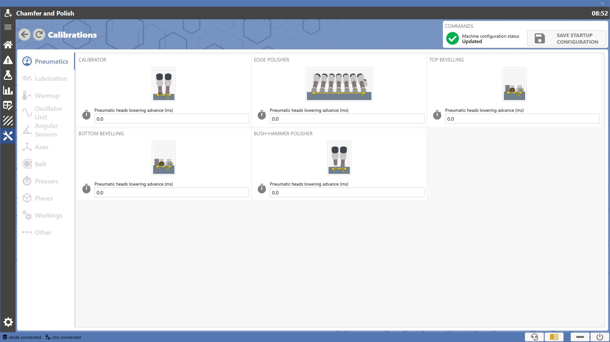

The Calibrations page allows to read and adjust machine calibration parameters, check real-time values and carry out the calibration procedures described in the following sections.
Changing a parameter can write values to the PLC immediately. Some commands start machine actions. Check the selected component, the machine state and the entered values before making a change or starting a command. Use this page only within your assigned calibration responsibilities.

Navigation and page commands
On the top of the page there are buttons to navigate pages.
 | Back |
Refresh |
Sections
Select a tab in the list on the left. Each section below has its own instructions, control descriptions and operating procedure.
Pneumatics | |
 | Lubrication |
 | Warmup |
Oscillator Unit | |
Angular Sensors | |
 | Axes |
Belt | |
Pressers | |
 | Pieces |
Workings | |
 | Other |
Machine configuration status
When the PLC is turned off, the values of the modified parameters might be lost.
From this section it is possible to save the machine’s startup configuration to mantain those informations after a restart.

On the left side it is described the status of the configuration:
 | Updated |
Update required |
In order to permanently save the parameters, use the following button:
 | Save Startup Configuration |